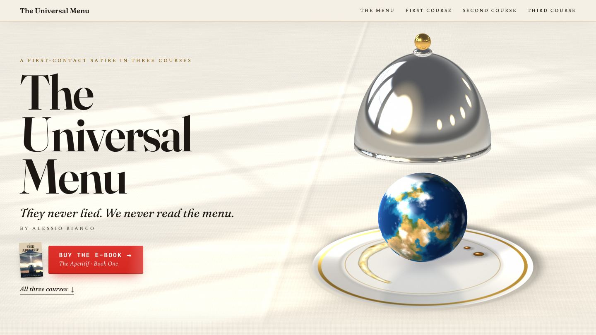
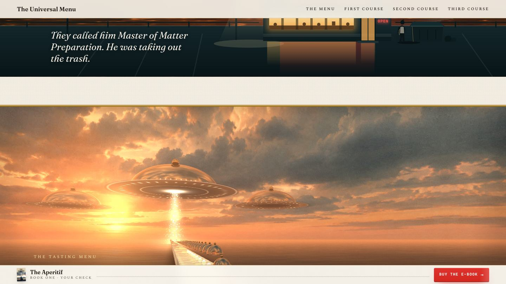
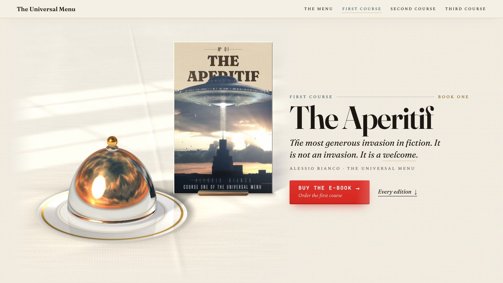

The Aperitif
Gli alieni sono atterrati davanti a una tavola calda in fallimento e hanno nominato il cuoco di notte ambasciatore dell'umanità. La loro civiltà è perfetta. Ha un'omissione.
Non hanno mai mentito. Siamo noi a non aver mai letto il menù.


Il primo contatto avviene nel parcheggio di una tavola calda in fallimento, e il cuoco di notte diventa l'ambasciatore dell'umanità presso una civiltà la cui religione, legge e arte sono l'ospitalità. Ha un'omissione.



The Universal MenuEsplora questo mondo3 libri
Gli alieni sono atterrati davanti a una tavola calda in fallimento e hanno nominato il cuoco di notte ambasciatore dell'umanità. La loro civiltà è perfetta. Ha un'omissione.

Ha scommesso la Terra su una ribellione lunga nove secoli — senza chiedersi contro che cosa, esattamente, si ribellino i ribelli.

Se non riesci a impressionare il critico, fagli rimandare indietro il piatto.
The Universal Menu
Alessio Bianco
Apri il libro — il mondo è dentro.
Sfoglia lo scaffale · 43